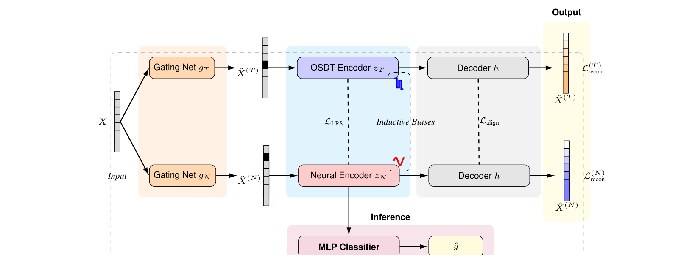

Research Highlights
Our group builds machine learning methods for efficient AI systems, interpretable models, tabular learning, multimodal representation learning, and scientific discovery.

Parameter-Efficient Training
We study low-rank optimization, structured sparsity, adaptive rank selection, and compression methods that make large models cheaper to train and deploy.
- SUMO NeurIPS 2025
- AdaRankGrad ICLR 2025
- Train Less, Infer Faster AISTATS 2026

Tabular Deep Learning
We design models for structured data where labels are scarce, features are heterogeneous, and explanations matter as much as predictive accuracy.
- Hybrid Autoencoders NeurIPS 2025
- Locally Sparse Neural Networks ICML 2022
- Partition First, Embed Later ICML 2025 Oral

Interpretability
Our interpretability work focuses on feature selection, sparse local explanations, and concept-level structure that remains useful in real scientific datasets.
- GroupFS AAAI 2026 Oral
- Stochastic Gates ICML 2020
- Conditional Stochastic Gates ICML 2024

Multimodal Learning
We develop representation learning tools for multiple views, modalities, and aligned or partially aligned observations, from clustering to spectral methods.
- COPER ICLR 2025 Spotlight
- Learning Permutation from Structure ICML 2026
- Robust Spectral Multi-view Learning TMLR 2025

Computational Biology
We use machine learning to study high-dimensional biological measurements, including single-cell data, adaptive immune receptors, and biomedical tabular prediction.
- DiCoLo RECOMB 2026
- Geometry-Based Data Generation NeurIPS 2018 Spotlight
- Alignment-Free BCR Clone Identification NAR 2020